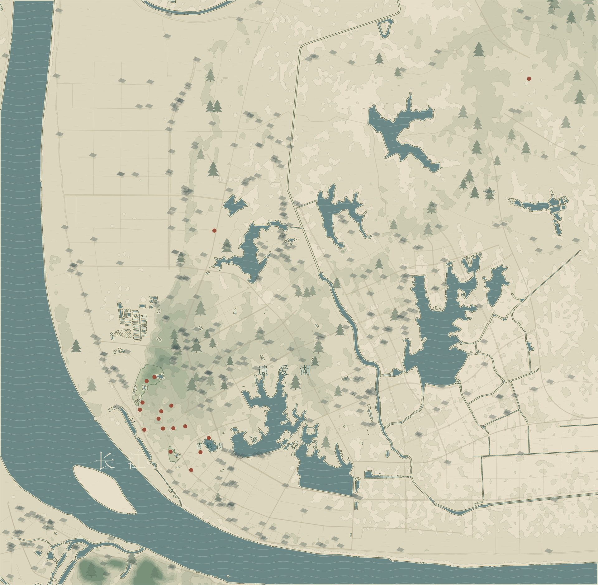

北 ↑
北 ↑© OpenStreetMap contributors · ODbL ／ Mapzen · USGS
北 ↑正在载入 Blender 地标…
当前浏览器未能启动 3D 视图
俯视图仍可查看；换用支持 WebGL 的浏览器可旋转地图。

每个入口，都能追溯到依据
取景范围：114.825–114.925°E / 30.410–30.485°N，约 9.58 × 8.34 公里。覆盖更完整的黄州主城区、长江沿岸和遗爱湖水系，仍不是黄州行政区全域。使用现代地理骨架承载诗文入口，未复原宋代岸线与城墙。
| 入口 | 关联作品 | 定位说明 | 地理来源 |
|---|
资料与使用范围
- OpenStreetMap contributors / ODbL：水系、道路、景区范围及现今纪念标记点；Overpass 返回快照为 2026-06-01T08:52:28Z，获取日期 2026-09-16。完整原始 JSON、查询条件和裁剪 GeoJSON 均随项目保存。
- Mapzen Terrain Tiles：z12 Terrarium 高程瓦片，解码后采样为 193 × 127 网格；此稿地势默认作 4 倍垂直夸张。全球 SRTM/GMTED2010 数据致谢 USGS；完整归属说明。本轮未核定每个像元的原始测量年代。
- 湖北日报《文史探幽：在千年黄州探寻东坡》（2025-07-06）：用于了解遗址定位的一种考证观点。文中东坡坐标未声明坐标系，未直接加入 WGS84 图层。
- 荆楚文化研究中心《东坡遗址今何在？考古锁定黄州青砖湖》（2011-10-23）：用于记录另一历史定位依据和考古背景，未据此臆绘宋城边界。
- 国际在线《湖北黄冈：寻迹黄州悟“功业”》（2025-01-03）：辅助了解现今承天寺遗址纪念空间。
文字关联为首轮选题索引，尚未完成版本校勘、完整作品库或逐条创作地点考证。沙湖暂不落点，待专项查证后决定外围入口。